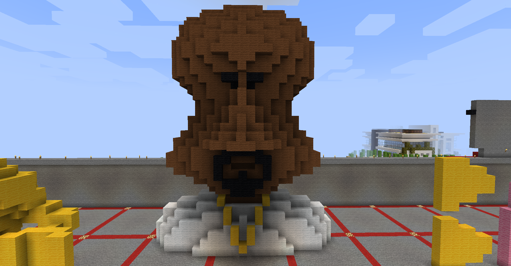

For my minecraft sculpture, I chose to build this very cursed edited image of Kanye West. I thought this would be a good representation of meme culture and how the most random and weird things can become widespread across the internet.